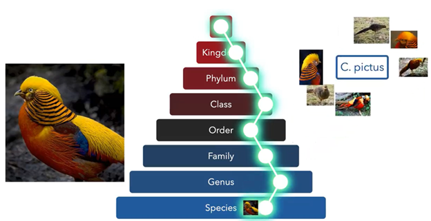
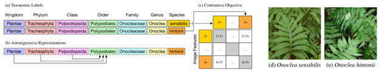

Imageomics Foundation Model

Project Members
Jianyang Gu, Samuel Stevens, Elizabeth G Campolongo, Matthew J Thompson, Net Zhang, Jiaman (Lisa) Wu, Andrei Kopanev, Zheda Mai, Alexander E White, James Balhoff, Wasila M Dahdul, Daniel Robenstein, Hilmar Lapp, Tanya Berger-Wolf, Wei-Lun (Harry) Chao, Yu Su, Jiaman W, Chan Hee Song, David Edward Carlyn, Charles Stewart, James Balhoff
Project Goals
To develop a foundation model for image-based biology tasks. Foundation models are large-scale neural networks pre-trained on a large amount of data (e.g., millions of animal images), which can then be used in a wide range of downstream tasks. Potential applications include species categorization, trait segmentation, individual identification, video analysis, and more.
Project Overview
The team introduced a novel learning objective to integrate biological taxonomies into the training of new foundation models for biology to be used in future studies. We are in the process of conducting extrinsic evaluation on a wide range of biology + machine learning tasks such as image classification, object detection, and segmentation. The foundation model team has been focusing on three main threads: incorporating biology taxonomy into foundation model training, new architecture for foundation models, and model interpretation.
We developed BioCLIP, a vision foundation model for the tree of life. Trained on over 10 million organism images (the TreeOfLife-10M dataset) with the tree of life taxonomy integrated in a novel way, BioCLIP has captured an internal representation that conforms to the tree of life, and proves to be a strong foundation model for a wide range of organisms. We are continuing to develop stronger foundation models for biology and exploring interesting applications to answer various biology questions.

BioCLIP 2
BioCLIP 2 was built on TreeOfLife-200M, following the BioCLIP training protocol with the addition of experience replay. In this work, we look at the biology imagery, asking what properties emerge if we scale up the hierarchical contrastive training in BioCLIP. We have released TreeOfLife-200M, the largest and most diverse available dataset of biology images. The new BioCLIP 2 model improves species classification by 18.1% over BioCLIP. Also, we demonstrate that BioCLIP 2 generalizes to diverse biological questions beyond species classification solely through species-level supervision.
We also developed a novel interpretable machine learning model named INterpretable TRansformer (INTR). Through visualizing the attention maps in a way faithful to its predictions, we show that INTR can successfully identify and localize biologically meaningful traits for species recognition. We hope to continue to expand the use of INTR, and further develop the technology.
BioCLIP Ecosystem
The BioCLIP Ecosystem site is essential in finding the most up-to-date information about BioCLIP-related projects, tools, and resources.